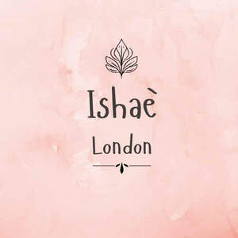

Trade Mark Journal No.2025/046 14 November 2025
UK00004287678 31 October 2025 (14)

- Class 14
- Imitation jewellery; Jewellery, including imitation jewellery and plastic jewellery; Imitation jewelry; Imitation jewellery ornaments; Articles of imitation jewellery; Jewellery; Fake jewellery; Brooches [jewellery]; Jewellery brooches; Brooches [jewellery, jewelry (Am.)]; Paste jewellery [costume jewelry (Am.)]; Paste jewellery [costume jewelry [Am.]]; Pearls [jewellery, jewelry (Am.)]; Ivory [jewellery, jewelry (Am.)]; Necklaces [jewellery]; Pewter jewellery; Cloisonne jewellery; Pearls [jewellery]; Plastic costume jewellery; Costume jewellery; Jade [jewellery]; Trinkets [jewellery, jewelry (Am.)]; Ornaments [jewellery, jewelry (Am.)]; Pendants [jewellery]; Decorative brooches [jewellery]; Necklaces [jewellery, jewelry (Am.)]; Ivory jewellery; Ornaments [jewellery]; Cloisonné jewellery [jewelry (Am.)]; Enamelled jewellery; Charms [jewellery, jewelry (Am.)]; Artificial jewellery; Bracelets [jewellery]; Trinkets [jewellery]; Bracelets [jewellery, jewelry (Am.)]; Amulets [jewellery, jewelry (Am.)]; Lockets [jewellery, jewelry (Am.)]; Chains [jewellery, jewelry (Am.)]; Jewellery fashioned of semi-precious stones; Lockets [jewellery]; Synthetic stones [jewellery]; Fashion jewellery; Charms [jewellery]; Charms for jewellery; Jewellery charms; Brooches [jewelry]; Jewelry brooches; Brooches being jewelry; Hat jewellery; Wristlets [jewellery]; Jewellery stones; Jewelry (Paste -) [costume jewelry]; Paste jewelry [costume jewelry]; Medallions [jewellery, jewelry (Am.)]; Jewellery products; Gold jewellery; Amulets being jewellery; Agate as jewellery; Cabochons for making jewellery; Amber pendants being jewellery; Jewellery chain of precious metal for necklaces; Rings [jewellery, jewelry (Am.)]; Silver thread [jewellery, jewelry (Am.)]; Imitation pearls; Cloisonné jewellery; Sterling silver jewellery; Jewellery fashioned from bronze; Gold plated brooches [jewellery]; Shoe jewellery; Gold thread [jewellery, jewelry (Am.)]; Jewelry; Jewellery in semi-precious metals; Wire of precious metal [jewellery, jewelry (Am.)]; Clasps for jewellery; Jewellery fashioned from non-precious metals; Jewellery in the form of beads; Jewellery chain; Clips of silver [jewellery]; Jewellery incorporating pearls; Beads for making jewellery; Jewellery chain of precious metal for anklets; Jewellery made from silver; Jewellery made of semi-precious materials; Pins [jewellery, jewelry (Am.)]; Items of jewellery; Jewellery items; Paste jewellery; Jewellery (Paste -); Jewellery chain of precious metal for bracelets; Jewellery caskets; Jewellery made from gold; Pearls [jewelry]; Dress ornaments in the nature of jewellery; Rings being jewellery; Rings [jewellery]; Necklaces [jewelry]; Jewellery chains; Chains [jewellery]; Threads of precious metal [jewellery, jewelry (Am.)]; Jewellery made of non-precious metal; Jewellery fashioned of precious metals; Jewellery for personal adornment; Imitation gold; Jewellery incorporating diamonds; Jewellery made of bronze; Amberoid pendants being jewellery; Rings [jewellery] made of non-precious metal; Facial jewellery; Ear ornaments in the nature of jewellery; Body costume jewellery; Figurines made of imitation gold; Jewellery made of glass; Pendants [jewelry]; Costume jewelry; Jewellery in non-precious metals; Ivory jewelry; Jewellery made of plastics; Jewellery rope chain for necklaces; Jewellery containing gold; Crosses [jewellery]; Bracelets made of embroidered textile [jewellery]; Lockets [jewelry]; Body jewellery; Cabochons for making jewelry; Rings [jewellery] made of precious metal; Jewellry.
Maeve Trading Solutions Limited